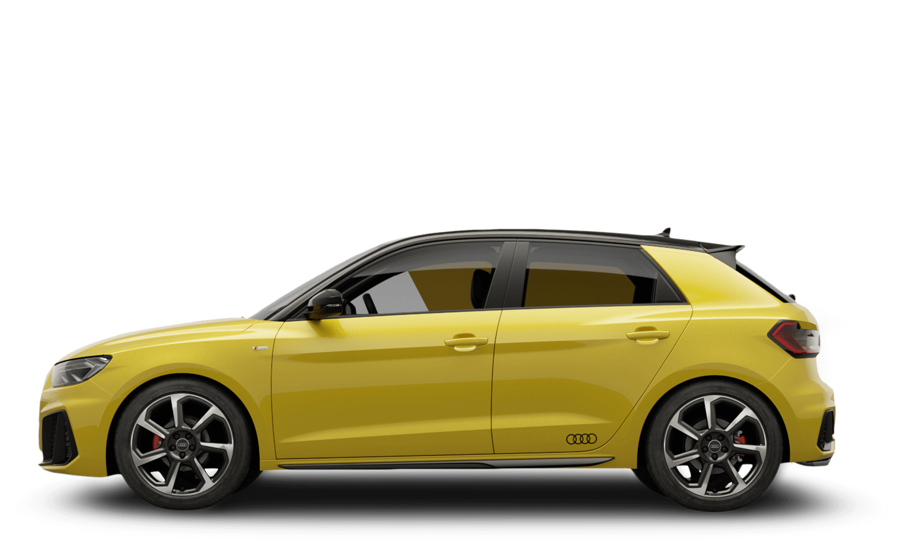
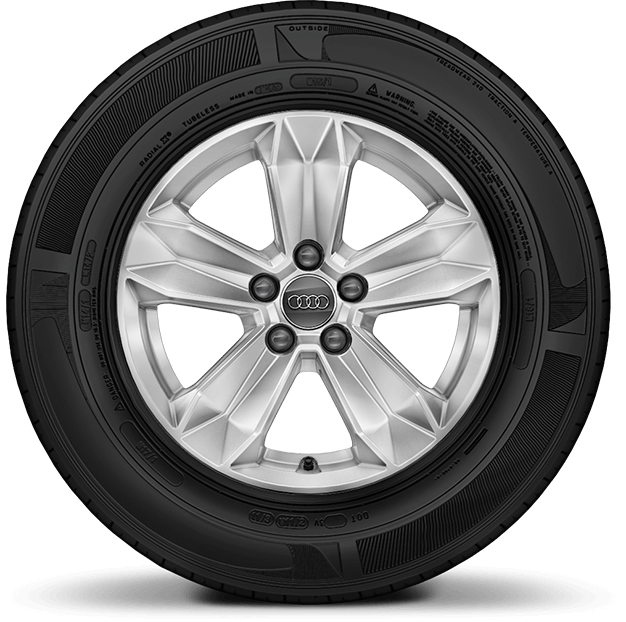
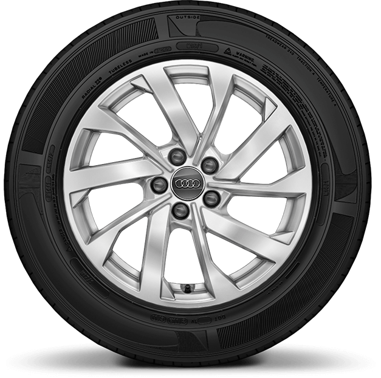
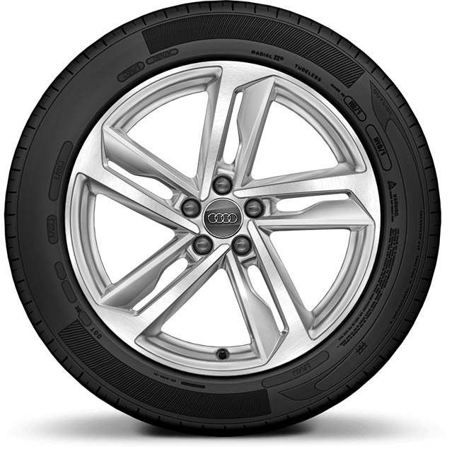
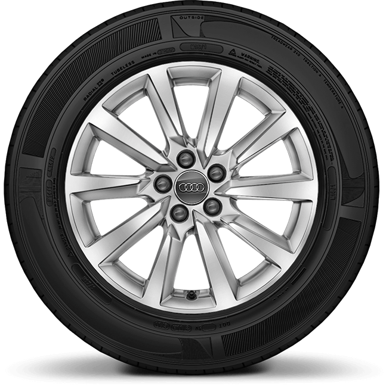
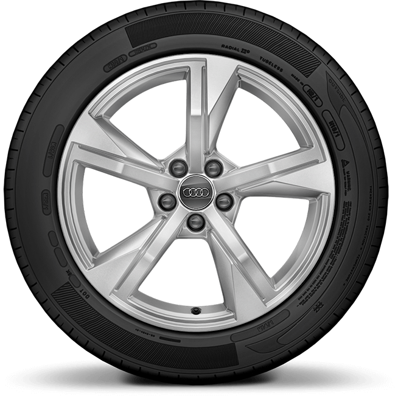
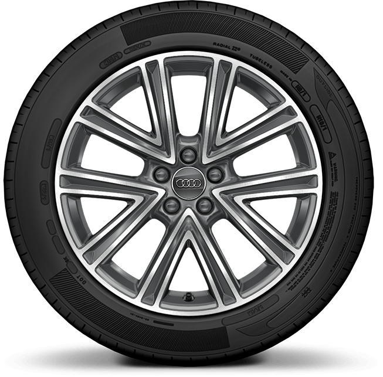
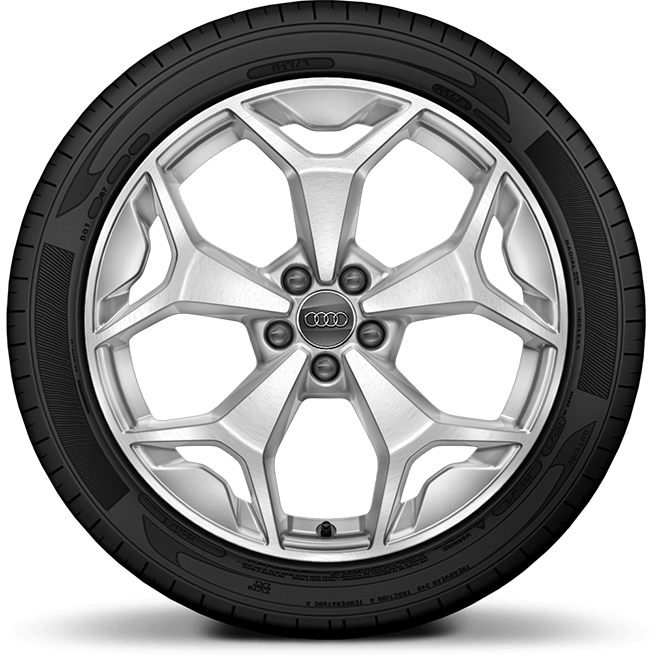

Text size
What Alloy Wheels Can I Get for My New Audi A1 Sportback?
Audi A1
Sportback
What you get doesn’t have to be what you see with the Audi A1 Sportback. Fantastic design, inside and out makes this gorgeous sporty number the ideal companion for city driving or trips further afield.
A heap of optional extras, including everything from a range of stunning body colours to a choice of alloy wheel upgrades, mean that you don’t have to work very hard to make this deceptively spacious compact car even more special.
Step right this way to discover how you can spice up your Audi A1 Sportback with an alloy wheel upgrade...
Which Alloy Wheels Come as Standard
on My Audi A1 Sportback?
Audi has picked a set of stunning standard alloy wheels for all variations of its A1 Sportback. Painstakingly chosen to complement the trim of each model, you can expect high quality alloy wheels included with the price of each new car.

Audi A1 Sportback SE
If you like a solid ride, these chunky alloy wheels will certainly suffice. Simple yet effective, they reflect your strength of character and will keep you on track, whatever your destination.
15” x 6.0J ‘5-arm’
design alloy wheels with 185/65 R15 tyres

Audi A1 Sportback Sport
These intricate alloy wheels are suited to a more complex driver. They’ll hypnotise any onlookers with their busy spinning while you sit back and take all of the compliments.
16” x 6.5J ‘10-spoke turbine’
design alloy wheels with 195/55 R16 tyres

Audi A1 Sportback S Line
Far from being standard, these detailed, diamond-cut alloy wheels provide a touch of glamour to the Audi A1 Sportback’s highest spec. And of course, twin spokes mean twice the number of admirers.
17” x 7.5J ‘5-twin-spoke’
design alloy wheels, diamond-cut finish with 215/45 R17 tyres
How Can I Upgrade the Alloy Wheels
on My Audi A1 Sportback?
If you haven’t fallen head over heels in love with the standard alloy wheels on your new Audi A1 Sportback (lovely though they are) you might want to look at adding something a little more eye-catching.
Remember that if you decide to upgrade your car’s alloy wheels, the combined height of the wheel and tyre must remain the same as the standard option. So if you’re upsizing your car’s alloys, the associated tyre profile will be shallower. Though this may result in some loss of ride comfort, it’ll almost definitely improve handling, not to mention increase your bling factor!
Upgrading the wheels on your Audi A1 Sportback is easy. Simply choose from one of the options below and include it in the spec when you order your new car, adding the associated cost to the purchase price. Then drive away, confident that you’ve created your ideal car.
What Alloy Wheel Options are Available
for My Audi A1 Sportback?
Audi has provided both the Sport and S line trims with a couple of alloy wheel upgrade options. Whether you want to add a touch of individuality, improve road grip or just impress your friends, they’ll certainly be a talking point.
cost:£250

SportAlloy Wheel Options
16” x 6.5J ‘10-spoke’
design alloy wheels with 195/55 R16 tyres
To curve or not to curve, your choice of alloy wheels is a matter of personal taste. These straight-talking spokes will point you in the right direction when it comes to the style stakes - perfect for the organised driver and well worth the investment.
cost:£750

17” x 7.5J ‘5-arm Star’
design alloy wheels with 215/45 R17 tyres
If you prefer a simpler design of alloy wheels and a lower profile tyre for your Sport Audi A1 Sportback, look no further. Tastefully uncomplicated, this star design allows plenty of room for your ego as well as letting your personality shine.
cost:£250

S Line Alloy Wheel Options
17” x 7.5J ‘5-spoke V’
design alloy wheels, diamond-cut finish with 215/45 R17 tyres
It’s a case of ‘the more the merrier’ with this V design appearing as ten, precision cut spokes. With alloy wheels as lovely as these you’ll have to ensure that you can do them justice by keeping up appearances with your driving ability.
cost:£750

18” x 7.5J ‘5-Y-spoke’
design alloy wheels in contrasting grey, diamond-cut finish with 215/40 R18 tyres
This is the lower profile option for your S line Audi Sportback, and what a choice! The cutaway design will really make your car stand out, while the resulting better handling will make you look good and feel fantastic.
Still can’t decide what alloy wheels to get for your Audi A1 Sportback? Here’s a little reminder of what’s on offer:
| Size | Alloy Wheel Description | Available with Trim | Recommended Retail Price (incl.VAT) |
|---|---|---|---|
| 15” x 6.0J | 5-arm design with 185/65 R15 tyres | SE | Standard |
| 16” x 6.5J | 10-spoke turbine design with 195/55 R16 tyres | Sport | Standard |
| 17” x 7.5J | 5-twin-spoke design, diamond-cut finish with 215/45 R17 tyres | S line | Standard |
| 16” x 6.5J | 10-spoke design alloy wheels with 195/55 R16 tyres | Sport | £250 |
| 17” x 7.5J | 5-arm star design with 215/45 R17 tyres | Sport | £750 |
| 17” x 7.5J | 5-spoke V design, diamond-cut finish with 215/45 R17 tyres | S line | £750 |
| 18” x 7.5J | 5-spoke Y design in contrasting grey, diamond-cut finish with 215/40 R18 tyres | S line | £750 |
So, even though you’ve found your perfect model in the Audi A1 Sportback, it doesn’t have to be a done deal. Who’d have thought that you’d have so much opportunity to help you make your new car exactly as you’ve dreamt it?
Visit your local Swansway Audi dealership to get a closer look at all of the upgrade choices.